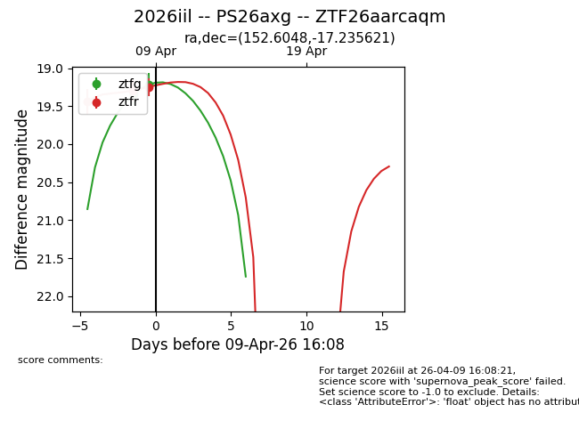
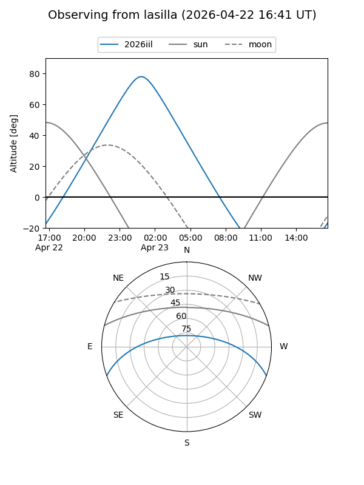
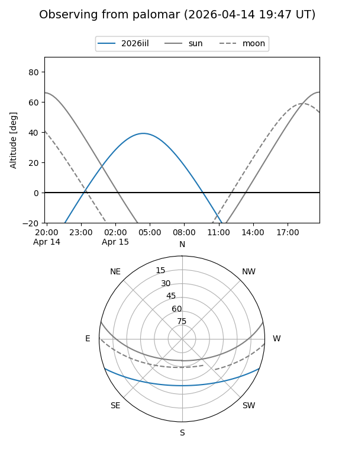
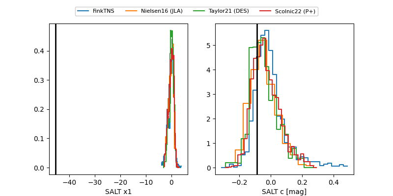

2026iil
Target 2026iil at 2026-04-09 16:14
Aliases and brokers:
FINK: link
Lasair: link
ALeRCE: link
TNS: link
YSE: link
alt names
ZTF26aarcaqm (ztf,fink_ztf)
2026iil (tns,yse)
PS26axg (panstarrs)
Coordinates:
equatorial (ra, dec) = 152.6048,-17.23562
equatorial (HMS+DMS) = 10:10:25.16,-17:14:08.23
galactic (l, b) = (256.9359,+30.90469)
Flags:
Photometry:
last ztfg=19.22, ztfr=19.25
2 ztfg, 3 ztfr detections
Lightcurve

Visibility


Additional plots
